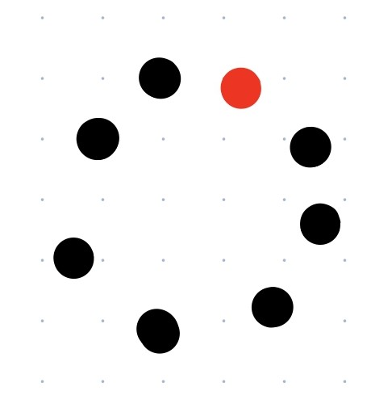

| Skill | Time | Activity | Materials | Formation |
|---|
Christian PS1 week: 1
| 1 - Enter and exit shallow water (assisted) | 3min | demonstrate using steps, ramps, pool edge to enter water play a game to get children comfortable and into the water | |  |
| 3 - Face in water | 5min | play Simon says focus on eyes, ears, chin, cheeks, nose, progressing to whole face underwater/treasure hunt | sinking toys |  |
| 4 - Blow bubbles in water | 4min | demonstrate and practice blowing bubbles using various pool toys | Floating toys | |
| 5 - Float on front and back(3 sec each)assisted | 7min | demonstrate and practice how to put on a PFD properly and assist as needed demonstrate and practice front float with PFD encourage children to blow bubbles | PFDs | |
| 6 - Safe movement in shallow water wearing PFDs | 4min | demonstrate and practice movement of arms and face in water play a game that reinforces movement | PDF | |